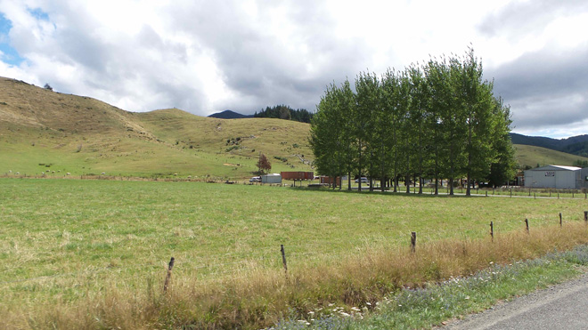
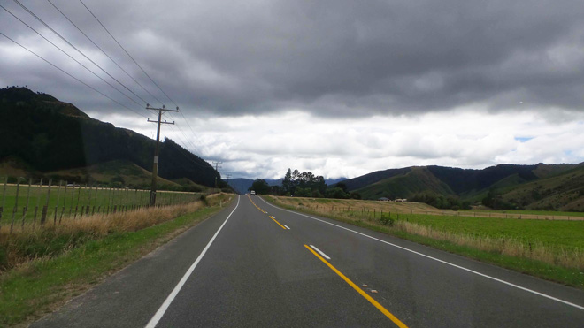
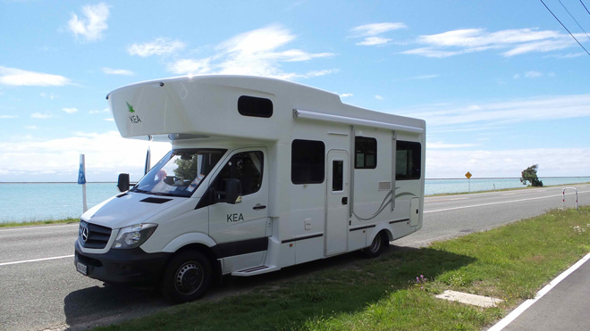
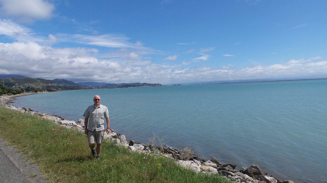
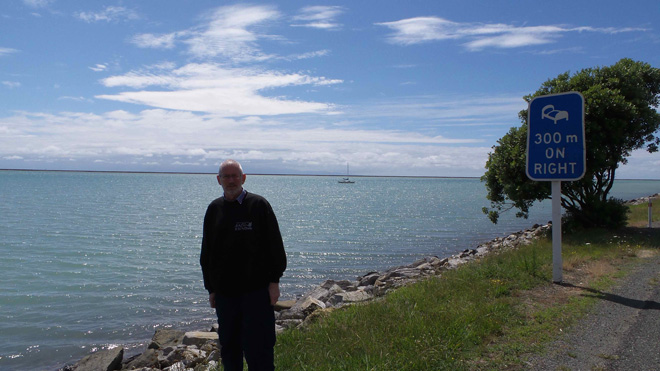
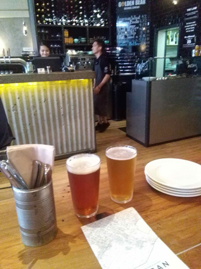
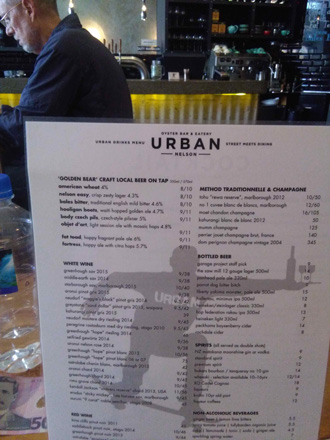
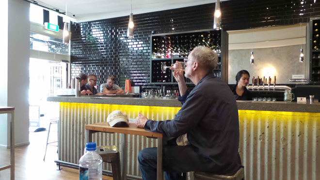
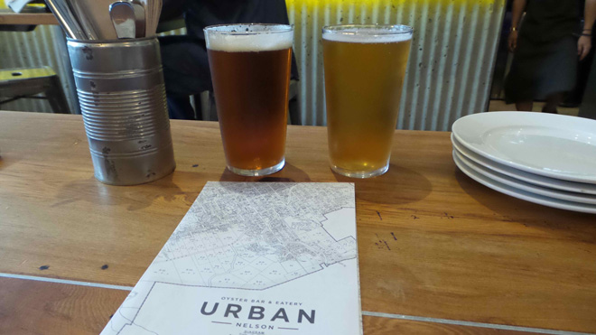

Dishing up a winning combination of great weather and beautiful surroundings, Nelson is hailed as one of New Zealand's most 'live-able' cities. It also is the home of a number of craft beers which, naturally, we had to try.








